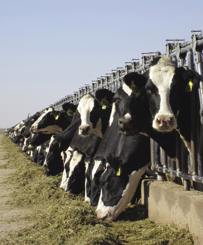
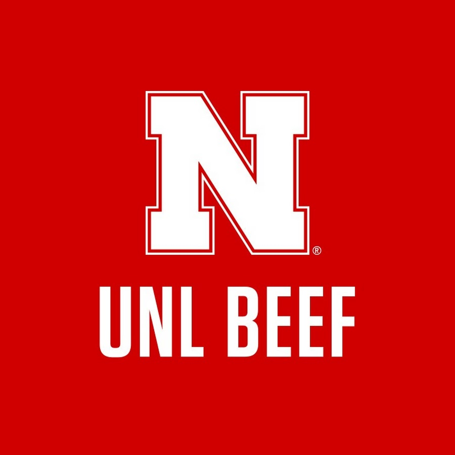

NMSU Extension: Gestation Table
’n tabel met tipiese dragtigheidsperiodes vir plaasdiere.
Eksterne Inligting
Hierdie blad wys waar die dragtigheidsperiodes (dae) vandaan kom.

| Dier | Dae | Nota |
|---|---|---|
| Koei | 283 | Gemiddeld; kan per ras verskil. |
| Skaap | 150 | Gemiddeld; kan per ras verskil. |
| Perd | 340 | Gemiddeld; kan per ras verskil. |
| Bok | 150 | Gemiddeld; kan per ras verskil. |




Ons missie is om boere te help en dat hulle op datum is met die nuutste nuus van hul diere
So ons stel voor om die links te volg en hul verstand te vergroot van die diere wat hulle sorg